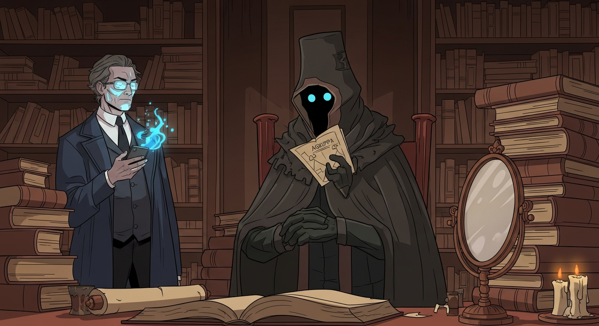
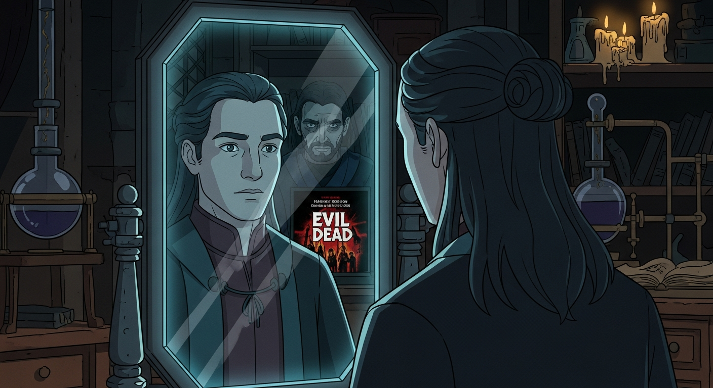

That is to say, folks, texts like the *Picatrix*—filled with astrological magic and bizarre recipes—weren't just superstition. They represent a worldview. An attempt to systematize reality. And even *Invisibilia Dei*, which deals with the Holy Guardian Angel, is, at its heart, a philosophical exercise. Now, about this obsidian mirror...

Here it is: an obsidian mirror, unearthed from a collection rivaling the *Evil Dead* cabin. Dee lingers, ethereal, perhaps guide, perhaps warning. Alexander sees not his reflection, but his doubt. The 'node in volume' isn't unlocked by ritual, but by facing that internal darkness. The alchemist's secret, it seems, was self-knowledge.